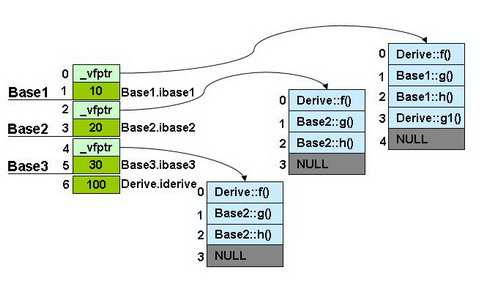
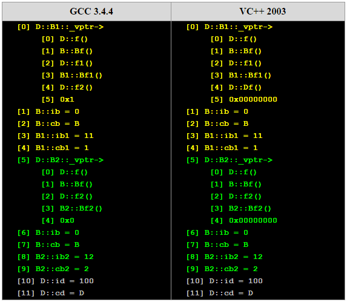

多继承
无虚函数覆盖的多重继承
那么，我们来看看多重继承中的情况，假设有下面这样一个类的继承关系。注意：子类并没有覆盖父类的函数。

我们的类继承的源代码如下所示：父类的成员初始为10，20，30，子类的为100
class Base1 {
public:
int ibase1;
Base1():ibase1(10) {}
virtual void f() { cout << "Base1::f()" << endl; }
virtual void g() { cout << "Base1::g()" << endl; }
virtual void h() { cout << "Base1::h()" << endl; }
};
class Base2 {
public:
int ibase2;
Base2():ibase2(20) {}
virtual void f() { cout << "Base2::f()" << endl; }
virtual void g() { cout << "Base2::g()" << endl; }
virtual void h() { cout << "Base2::h()" << endl; }
};
class Base3 {
public:
int ibase3;
Base3():ibase3(30) {}
virtual void f() { cout << "Base3::f()" << endl; }
virtual void g() { cout << "Base3::g()" << endl; }
virtual void h() { cout << "Base3::h()" << endl; }
};
class Derive : public Base1, public Base2, public Base3 {
public:
int iderive;
Derive():iderive(100) {}
virtual void f() { cout << "Derive::f()" << endl; }
virtual void g1() { cout << "Derive::g1()" << endl; }
};
typedef void(*Fun)(void);
int main()
{
Derive d;
Fun pFun = NULL;
int** pVtab = (int**)&d;
cout << "[0] Base1::_vptr->" << endl;
pFun = (Fun)pVtab[0][0];
cout << " [0] ";pFun();
pFun = (Fun)pVtab[0][1];
cout << " [1] ";pFun();
pFun = (Fun)pVtab[0][2];
cout << " [2] ";pFun();
pFun = (Fun)pVtab[0][3];
cout << " [3] "; pFun();
pFun = (Fun)pVtab[0][4];
cout << " [4] "; cout<<pFun<<endl;
cout << "[1] Base1.ibase1 = " << (int)pVtab[1] << endl;
int s = sizeof(Base1)/4;
cout << "[" << s << "] Base2::_vptr->"<<endl;
pFun = (Fun)pVtab[s][0];
cout << " [0] "; pFun();
pFun = (Fun)pVtab[s][1];
cout << " [1] "; pFun();
pFun = (Fun)pVtab[s][2];
cout << " [2] "; pFun();
pFun = (Fun)pVtab[s][3];
cout << " [3] ";
cout<<pFun<<endl;
cout << "["<< s+1 <<"] Base2.ibase2 = " << (int)pVtab[s+1] << endl;
s = s + sizeof(Base2)/4;
cout << "[" << s << "] Base3::_vptr->"<<endl;
pFun = (Fun)pVtab[s][0];
cout << " [0] "; pFun();
pFun = (Fun)pVtab[s][1];
cout << " [1] "; pFun();
pFun = (Fun)pVtab[s][2];
cout << " [2] "; pFun();
pFun = (Fun)pVtab[s][3];
cout << " [3] ";
cout<<pFun<<endl;
s++;
cout << "["<< s <<"] Base3.ibase3 = " << (int)pVtab[s] << endl;
s++;
cout << "["<< s <<"] Derive.iderive = " << (int)pVtab[s] << endl;
return 0;
}上面程序中，注意使用了一个s变量，其中用到了sizof(Base1)来找下一个类的偏移量（因为声明的基类中成员是int成员，所以是8个字节要加上虚函数表地址所占4个字节，所以没有对齐问题）。输出结果：
[0] Base1::_vptr->
[0] Derive::f()
[1] Base1::g()
[2] Base1::h()
[3] Derive::g1()
[4] 1
[1] Base1.ibase1 = 10
[2] Base2::_vptr->
[0] Derive::f()
[1] Base2::g()
[2] Base2::h()
[3] 1
[3] Base2.ibase2 = 20
[4] Base3::_vptr->
[0] Derive::f()
[1] Base3::g()
[2] Base3::h()
[3] 0
[5] Base3.ibase3 = 30
[6] Derive.iderive = 100使用图片表示则是这个样子：

可以发现：
- 每个父类都有自己的虚表；
- 子类的成员函数被放到了第一个父类的表中；
- 内存布局中，其父类布局依次按声明顺序排列；
- 每个父类的虚表中的'f()'函数都被'overwrite'成了子类的'f()'。这样做就是为了解决不同的父类类型的指针指向同一个子类实例，而能够调用到实际的函数。
思考这个问题：如果Base1中函数均不是虚函数会有什么变化呢？答案是：子类对象的内存布局中会少一个虚函数表。至于基类的顺序 T_T.
代码的变化：
class Base1 {
public:
int ibase1;
Base1():ibase1(10) {}
void f() { cout << "Base1::f()" << endl; }
void g() { cout << "Base1::g()" << endl; }
void h() { cout << "Base1::h()" << endl; }
};
int main()
{
Derive d;
Fun pFun = NULL;
int** pVtab = (int**)&d;
cout << "[" << 0 << "] Base2::_vptr->"<<endl;
pFun = (Fun)pVtab[0][0];
cout << " [0] "; pFun();
pFun = (Fun)pVtab[0][1];
cout << " [1] "; pFun();
pFun = (Fun)pVtab[0][2];
cout << " [2] "; pFun();
pFun = (Fun)pVtab[0][3];
cout << " [3] ";
cout<<pFun<<endl;
cout << "[1] Base2.ibase2 = " << (int)pVtab[1] << endl;
cout << "[2] Base1.ibase1 = " << (int)pVtab[2] << endl;
cout << "[3] Base2::_vptr->"<<endl;
pFun = (Fun)pVtab[3][0];
cout << " [0] "; pFun();
pFun = (Fun)pVtab[3][1];
cout << " [1] "; pFun();
pFun = (Fun)pVtab[3][2];
cout << " [2] "; pFun();
pFun = (Fun)pVtab[3][3];
cout << " [3] ";
cout<<pFun<<endl;
cout << "[4] Base3.ibase3 = " << (int)pVtab[4] << endl;
cout << "[5] Derive.iderive = " << (int)pVtab[5] << endl;
return 0;
}代码为什么这么些，因为我费了点时间，测试子类对象的布局。输出的结果：
[0] Base2::_vptr-> // 第一个基类竟然是 Base1
[0] Derive::f()
[1] Base2::g()
[2] Base2::h()
[3] 1
[1] Base2.ibase2 = 20
[2] Base1.ibase1 = 10 // Base1 位置
[3] Base2::_vptr->
[0] Derive::f()
[1] Base3::g()
[2] Base3::h()
[3] 0
[4] Base3.ibase3 = 30
[5] Derive.iderive = 100本来认为基类顺序是不发生变化的，可是写的测试代码竟然不对呀。所以可以发现：
- 非虚继承方式，子类对象的虚函数表个数和基类的个数一致
- 基类顺序发生变化，排第一顺位的是第一个有虚函数的基类（原因：子类有虚函数，那么首位必须是虚函数表了）
那么，再思考个问题吧（就是这么shierma...哈哈
如果第一个基类中没有虚函数，而将子类覆写的虚函数换成g()会怎样？（顺带将子类中的g1()->f1()）
代码变化部分：
class Derive : public Base1, public Base2, public Base3 {
public:
int iderive;
Derive():iderive(100) {}
virtual void f1() { cout << "Derive::f1()" << endl; }
virtual void g() { cout << "Derive::g()" << endl; }
};结果：
[0] Base2::_vptr->
[0] Base2::f()
[1] Derive::g()
[2] Base2::h()
[3] 1
[1] Base2.ibase2 = 20
[2] Base1.ibase1 = 10
[3] Base2::_vptr->
[0] Base3::f()
[1] Derive::g()
[2] Base3::h()
[3] 0
[4] Base3.ibase3 = 30
[5] Derive.iderive = 100记得，我在单继承那节有提出一个问题，结合这里的输出结果，基本可以了解C++实现多态的原理了，敲黑板：
对于非虚函数，编译时就可以得到被调用函数的地址（如果被调用函数在子类中没有匹配类型，就向上找父类中名字一样函数进行匹配）；对于虚函数，因为函数在虚函数表中的位置是固定的，那么编译器会替换成虚函数表的地址加该虚函数对应的偏移。这里是我先想出来然后代码验证的，因为感觉这样才能实现嘛 ^_^.
下面是重复继承，还有这么多，不想写了呀（模仿欧弟二柱子声音^_^）！桌子掀了就要摆好 ┬─┬ ノ('-'ノ) （还是掀了算了） (╯°Д°)╯︵ ┻━┻.
重复继承
那么，再来看看，发生重复继承的情况。所谓重复继承，也就是某个基类被间接地重复继承了多次。下图是一个继承图，我们重载了父类的f()函数。

其类继承的源代码如下所示。其中，每个类都有两个变量，一个是整形（4字节），一个是字符（1字节），而且还有自己的虚函数，自己overwrite父类的虚函数。如子类D中，f()覆盖了超类的函数， f1() 和f2() 覆盖了其父类的虚函数，Df()为自己的虚函数。
class B
{
public:
int ib;
char cb;
public:
B():ib(0),cb('B') {}
virtual void f() { cout << "B::f()" << endl;}
virtual void Bf() { cout << "B::Bf()" << endl;}
};
class B1 : public B
{
public:
int ib1;
char cb1;
public:
B1():ib1(11),cb1('1') {}
virtual void f() { cout << "B1::f()" << endl;}
virtual void f1() { cout << "B1::f1()" << endl;}
virtual void Bf1() { cout << "B1::Bf1()" << endl;}
};
class B2: public B
{
public:
int ib2;
char cb2;
public:
B2():ib2(12),cb2('2') {}
virtual void f() { cout << "B2::f()" << endl;}
virtual void f2() { cout << "B2::f2()" << endl;}
virtual void Bf2() { cout << "B2::Bf2()" << endl;}
};
class D : public B1, public B2
{
public:
int id;
char cd;
public:
D():id(100),cd('D') {}
virtual void f() { cout << "D::f()" << endl;}
virtual void f1() { cout << "D::f1()" << endl;}
virtual void f2() { cout << "D::f2()" << endl;}
virtual void Df() { cout << "D::Df()" << endl;}
};
typedef void(*Fun)(void);
int main()
{
D d;
Fun pFun = NULL;
int** pVtab = (int**)&d;
cout << "[0] D::B1::_vptr->" << endl;
pFun = (Fun)pVtab[0][0];
cout << " [0] "; pFun();
pFun = (Fun)pVtab[0][1];
cout << " [1] "; pFun();
pFun = (Fun)pVtab[0][2];
cout << " [2] "; pFun();
pFun = (Fun)pVtab[0][3];
cout << " [3] "; pFun();
pFun = (Fun)pVtab[0][4];
cout << " [4] "; pFun();
pFun = (Fun)pVtab[0][5];
cout << " [5] 0x" << pFun << endl;
cout << "[1] B::ib = " << (int)pVtab[1] << endl;
cout << "[2] B::cb = " << (char)(int)pVtab[2] << endl;
cout << "[3] B1::ib1 = " << (int)pVtab[3] << endl;
cout << "[4] B1::cb1 = " << (char)(int)pVtab[4] << endl;
cout << "[5] D::B2::_vptr->" << endl;
pFun = (Fun)pVtab[5][0];
cout << " [0] "; pFun();
pFun = (Fun)pVtab[5][1];
cout << " [1] "; pFun();
pFun = (Fun)pVtab[5][2];
cout << " [2] "; pFun();
pFun = (Fun)pVtab[5][3];
cout << " [3] "; pFun();
pFun = (Fun)pVtab[5][4];
cout << " [4] 0x" << pFun << endl;
cout << "[6] B::ib = " << (int)pVtab[6] << endl;
cout << "[7] B::cb = " << (char)(int)pVtab[7] << endl;
cout << "[8] B2::ib2 = " << (int)pVtab[8] << endl;
cout << "[9] B2::cb2 = " << (char)(int)pVtab[9] << endl;
cout << "[10] D::id = " << (int)pVtab[10] << endl;
cout << "[11] D::cd = " << (char)(int)pVtab[11] << endl;
return 0;
}输出结果：

这里直接使用了酷壳的图片，因为结果是一样的，我的gcc版本之前说过了已经到6了。新技术不断发展，但是大厦基础是不怎么变动的。
下面是对于子类实例中的虚函数表的图：

可以看见，最顶端的父类B其成员变量存在于B1和B2中，并被D给继承下去了。而在D中，其有B1和B2的实例，于是B的成员在D的实例中存在两份，一份是B1继承而来的，另一份是B2继承而来的。所以，如果我们使用以下语句，则会产生二义性编译错误：
D d;
d.ib = 0; //二义性错误
d.Bf(); //二义性错误
d.B1::ib = 1; //正确
d.B2::ib = 2; //正确注意，上面例程中的最后两条语句存取的是两个变量。虽然我们消除了二义性的编译错误，但B类在D中还是有两个实例，这种继承造成了数据的重复，我们叫这种继承为重复继承。重复的基类数据成员可能并不是我们想要的。所以，C++引入了虚基类的概念。